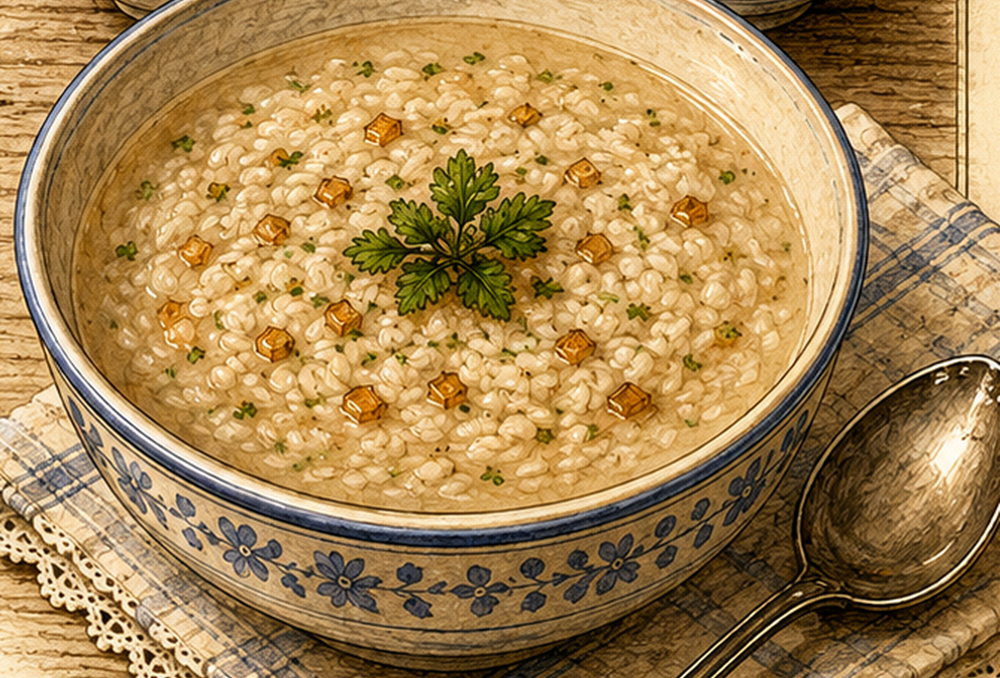

Gebundene Reissuppe
Eine milde Reissuppe mit heller Einbrenne, gebräunter Zwiebel und Petersilie.

Originale Überlieferung
Die Überlieferung nennt 80 g Fett, 40 g Mehl, 40 g Reis, 2 l Wasser, Salz und eine Zwiebel. Zuerst wird eine helle Einbrenne bereitet. Der Reis wird vorgequollen; anschließend kommt alles mit einer in Fett gebräunten Zwiebel zusammen und wird mit Salz und Petersilie abgeschmeckt.
Moderne Übertragung
Der Reis wird weich gekocht. Aus Fett und Mehl entsteht eine helle Mehlschwitze, die mit Wasser aufgefüllt wird. Reis und goldbraun geröstete Zwiebel werden zugegeben und die Suppe sanft fertig gekocht.
Zutaten
- 80 g Fett oder Butter
- 40 g Mehl
- 40 g Reis
- 2 l Wasser
- 1 Zwiebel
- Salz
- etwas Petersilie
Zubereitung
- Den Reis waschen und in einem Teil des Wassers fast weich kochen.
- Die Zwiebel fein würfeln und in einem Teil des Fettes goldbraun braten.
- Aus dem übrigen Fett und dem Mehl eine helle Mehlschwitze bereiten.
- Nach und nach mit dem restlichen Wasser auffüllen und glatt rühren.
- Reis und Zwiebel zugeben, kurz köcheln lassen und mit Salz und Petersilie abschmecken.